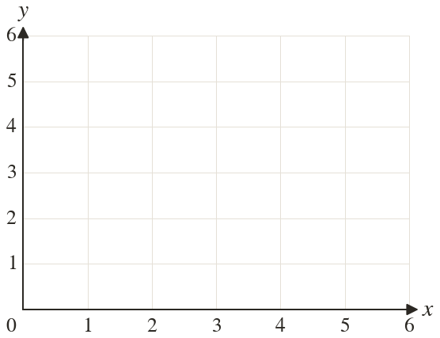
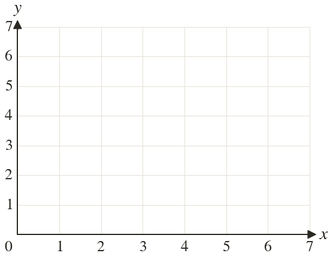

Westonbirt Maths · Linear Inequalities
Regions from Inequalities
Name: ______________________ Date: ____________
1
Show the region and label it R.
2
Show the region and and label it R.
3
Is the point in the region ?
4
Show the region and and label it R.
5
Which of and lie in the region and ?
Ext
Show the region and and give the corners of R.

